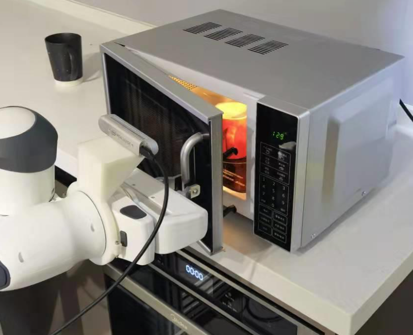
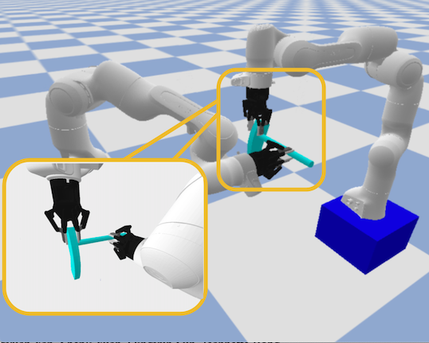
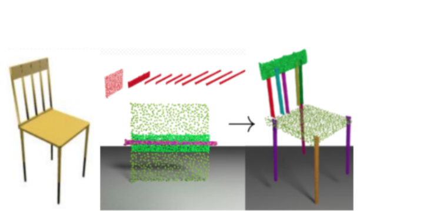

EMOS: Embodiment-aware Heterogeneous Multi-robot Operating System with LLM Agents |
|
|
FLIP: Flow-Centric Generative Planning for General-Purpose Manipulation Tasks |
|
D(R,O) Grasp: A Unified Representation of Robot and Object Interaction for Cross-Embodiment Dexterous Grasping |
TieBot: Model-based Learning to Knot a Tie from Visual
Demonstration via Differentiable Physics-based Simulation |
|
RiEMann: Near Real-Time SE(3)-Equivariant Robot Manipulation without Point Cloud Segmentation |
|
Design and Control of Roller Grasper V3 for
In-Hand Manipulation |
|
ManiFoundation Model for General-Purpose Robotic Manipulation of Contact Synthesis with Arbitrary Objects and Robots |
|
SoftMAC: Differentiable Soft Body Simulation with Forecast-based Contact
Model and Two-way Coupling with Articulated Rigid Bodies and Clothes |
|
Learning Reward for Robot Skills Using Large Language Models via
Self-Alignment |
|
Generalizable Long-Horizon Manipulations
with Large Language Models |
|
Category-Level Multi-Part Multi-Joint 3D Shape Assembly |
|
|
Jade: A Differentiable Physics Engine for Articulated Rigid Bodies with Intersection-Free Frictional Contact |
GAMMA: Generalizable Articulation Modeling and Manipulation for Articulated Objects |
|
Diff-LfD: Contact-aware Model-based Learning from Visual
Demonstration for Robotic Manipulation via Differentiable Physics-based
Simulation and Rendering |
|
|
ClothesNet: An Information-Rich 3D Garment Model Repository with Simulated Clothes Environment |
|
DexRepNet: Learning Dexterous Robotic Grasping Network with
Geometric and Spatial Hand-Object Representations |
DiffClothAI: Differentiable Cloth Simulation with Intersection-free
Frictional Contact and Differentiable Two-Way Coupling with Articulated Rigid Bodies |
|
SAM-RL: Sensing-Aware Model-based Reinforcement Learning via Differentiable Physics-based Simulation and Rendering |
|
 |
SAGCI-System: Towards Sample-Efficient, Generalizable, Compositional, and Incremental Robot Learning |
 |
RoboAssembly: Learning Generalizable Furniture Assembly Policy in a Novel Multi-robot Contact-rich Simulation Environment |
|
Learning to Regrasp by Learning to Place |
GRAC: Self-Guided and Self-Regularized Actor-Critic |
|
|
OmniHang: Learning to Hang Arbitrary Objects Using Contact Point Correspondences and Neural Collision Estimation |
|
Generative 3D Part Assembly via Dynamic Graph Learning |
Concept2Robot: Learning Manipulation Concepts from Instructions and Human Demonstrations |
|
 |
Learning 3D Part Assembly from a Single Image |
Design and Control of Roller Grasper V2 for In-Hand Manipulation |
|
|
Learning to Scaffold the Development of Robotic Manipulation Skills |
|
UniGrasp: Learning a Unified Model to Grasp with Multifingered Robotic Hands |
Motion-based Object Segmentation
based on Dense RGB-D Scene Flow |
|
Cross-modal Attribute Transfer for Rescaling 3D Models |